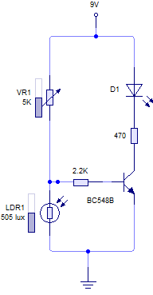
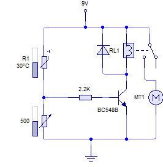
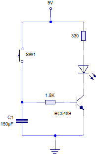
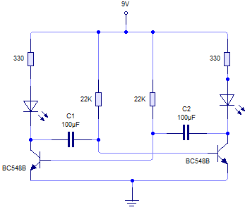
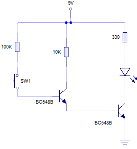
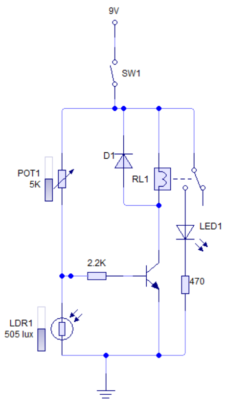

Modelado, simulación interactiva y deducción analítica rigurosa del punto de trabajo $Q(V_{CEQ}, I_{CQ}, I_{BQ})$ con los valores exactos de los esquemáticos originales de SimulIDE: alimentación de 9V, transistor NPN BC548B, divisor LDR con potenciómetro de 5kΩ, NTC con relé y motor, temporizador de 150µF, astable de 100µF y par Darlington compuesto.
Para cualquier circuito con transistores bipolares (BJT), el análisis del punto de reposo $Q$ exige evaluar sistemáticamente las mallas de entrada y de salida siguiendo este procedimiento estándar:
Paso 1 Análisis de la Malla de Entrada (Base - Emisor):
Reducir el circuito de polarización de base a su equivalente de Thévenin ($V_{TH}, R_{TH}$). Si la tensión en vacío es menor que el umbral de conducción ($V_{TH} < 0.65\text{ V}$), la unión base-emisor está bloqueada:
$$I_B = 0 \implies I_C = 0 \implies V_{CE} = V_{CC} = 9\text{ V} \quad \text{\textbf{(REGIÓN DE CORTE)}}$$
Paso 2 Hipótesis de Región Activa Lineal:
Si $V_{TH} \ge 0.70\text{ V}$, se asume $V_{BE} \approx 0.70\text{ V}$ y se despeja la corriente de base considerando las resistencias en serie ($R_{TH} + R_B$):
$$I_B = \frac{V_{TH} - V_{BE}}{R_{TH} + R_B} \quad \implies \quad I_C = \beta \cdot I_B$$
Se calcula la tensión Colector-Emisor en la malla de salida:
$$V_{CE} = V_{CC} - I_C R_C - V_{carga}$$
Paso 3 Validación o Corrección a Saturación:
• Si $V_{CE} > 0.25\text{ V}$, la hipótesis activa se confirma $\implies$ Punto Q en Región Activa.
• Si el cálculo da $V_{CE} \le 0.20\text{ V}$, el transistor está en Saturación. Se fija $V_{CE} = V_{CE(sat)} \approx 0.20\text{ V}$ y se recalcula la corriente máxima de colector impuesta por la carga:
$$I_{C(sat)} = \frac{V_{CC} - V_{carga} - V_{CE(sat)}}{R_C} \quad \text{y se verifica que } I_B > I_{B(min)} = \frac{I_{C(sat)}}{\beta}$$
Gain = 200 (o el valor de ganancia fijado para la sesión de laboratorio) para que los valores de simulación coincidan exactamente con la deducción analítica.
El circuito consta de un divisor de tensión formado por el potenciómetro superior $\text{VR1} = 5\text{ k}\Omega$ y la fotorresistencia inferior $\text{LDR1}$. La base del transistor $\text{BC548B}$ se conecta al divisor a través de una resistencia limitadora de $R_B = 2.2\text{ k}\Omega$. En la salida, el colector controla un diodo LED $\text{D1}$ con una resistencia limitadora $R_C = 470\ \Omega$ alimentado a $+9\text{ V}$.

Parámetros del esquema: $V_{CC} = 9\text{ V}$, potenciómetro $\text{VR1} = 5\text{ k}\Omega$, resistencia en serie de base $R_B = 2.2\text{ k}\Omega$, resistencia de colector $R_C = 470\ \Omega$, caída de tensión en LED $V_{LED} \approx 1.8\text{ V}$, transistor $\text{BC548B}$ con $\beta = 200$.
Caso A: Iluminación Alta (Luz Plena, $R_{LDR} \approx 200\ \Omega$, potenciómetro al 100% $\text{VR1} = 5\text{ k}\Omega$):
Calculamos la tensión en el divisor de base en circuito abierto:
$$V_{nodo} = V_{CC} \cdot \frac{R_{LDR}}{\text{VR1} + R_{LDR}} = 9\text{ V} \cdot \frac{200\ \Omega}{5000\ \Omega + 200\ \Omega} = 9 \cdot \frac{200}{5200} \approx \mathbf{0.346\text{ V}}$$
Como $V_{nodo} = 0.346\text{ V} < 0.65\text{ V}$, la unión base-emisor no alcanza el potencial de umbral ($V_\gamma \approx 0.65\text{ V}$):
$$I_B = 0\ \mu\text{A}, \quad I_C = 0\text{ mA}, \quad V_{CE} = V_{CC} = \mathbf{9.0\text{ V}} \quad \implies \quad \mathbf{Q_{luz} = (9.0\text{ V},\ 0\text{ mA}) \quad [CORTE]}$$
El LED permanece totalmente apagado.
Caso B: Oscuridad Plena ($R_{LDR} \approx 100\text{ k}\Omega$, $\text{VR1} = 5\text{ k}\Omega$):
Equivalente de Thévenin del divisor sensor:
$$V_{TH} = 9\text{ V} \cdot \frac{100\text{ k}\Omega}{5\text{ k}\Omega + 100\text{ k}\Omega} = 9 \cdot \frac{100}{105} \approx \mathbf{8.57\text{ V}}$$
$$R_{TH} = 5\text{ k}\Omega \parallel 100\text{ k}\Omega = \frac{500}{105} \approx \mathbf{4.76\text{ k}\Omega}$$
Resistencia total vista desde la base: $R_{B(total)} = R_{TH} + R_B = 4.76\text{ k}\Omega + 2.2\text{ k}\Omega = \mathbf{6.96\text{ k}\Omega}$.
Corriente inyectada a la base ($V_{BE(sat)} \approx 0.75\text{ V}$):
$$I_B = \frac{V_{TH} - V_{BE}}{R_{B(total)}} = \frac{8.57\text{ V} - 0.75\text{ V}}{6.96\text{ k}\Omega} = \frac{7.82\text{ V}}{6.96\text{ k}\Omega} \approx \mathbf{1.124\text{ mA} = 1124\ \mu\text{A}}$$
Corriente de saturación máxima fijada por la malla de colector ($V_{CE(sat)} \approx 0.20\text{ V}$):
$$I_{C(sat)} = \frac{V_{CC} - V_{LED} - V_{CE(sat)}}{R_C} = \frac{9\text{ V} - 1.8\text{ V} - 0.2\text{ V}}{470\ \Omega} = \frac{7.0\text{ V}}{470\ \Omega} \approx \mathbf{14.89\text{ mA}}$$
Corriente mínima de base requerida para sostener la saturación ($\beta = 200$):
$$I_{B(min)} = \frac{I_{C(sat)}}{\beta} = \frac{14.89\text{ mA}}{200} \approx \mathbf{0.0745\text{ mA} = 74.5\ \mu\text{A}}$$
Factor de sobremarcha: $k_{OD} = \frac{I_B}{I_{B(min)}} = \frac{1124\ \mu\text{A}}{74.5\ \mu\text{A}} \approx 15.1$.
Como $I_B \gg I_{B(min)}$, el transistor está en SATURACIÓN PROFUNDA:
$$\mathbf{Q_{oscuridad} = (0.20\text{ V},\ 14.89\text{ mA}) \quad [SATURACIÓN]}$$
El LED $\text{D1}$ enciende con brillo pleno ($I_{D1} \approx 14.9\text{ mA}$).
Datos del esquema: $V_{CC} = 9\text{ V}$, $\text{VR1} = 5\text{ k}\Omega$, $R_B = 2.2\text{ k}\Omega$, $R_C = 470\ \Omega$, $V_{LED} = 1.8\text{ V}$, transistor $\text{BC548B}$ con $\beta = 200$.
Plantee el divisor de tensión en el nodo de base para comprobar si supera el voltaje umbral $V_\gamma \approx 0.65\text{ V}$:
$$V_{nodo} = V_{CC} \cdot \frac{R_{LDR}}{\text{VR1} + R_{LDR}} = (9\text{ V}) \cdot \frac{200\ \Omega}{5000\ \Omega + 200\ \Omega}$$Deduzca el equivalente de Thévenin del divisor y sume la resistencia en serie de base $R_B = 2.2\text{ k}\Omega$:
$$V_{TH} = V_{CC} \cdot \frac{R_{LDR}}{\text{VR1} + R_{LDR}}, \qquad R_{B(total)} = \left(\frac{\text{VR1} \cdot R_{LDR}}{\text{VR1} + R_{LDR}}\right) + R_B$$Malla de colector: calcule la corriente máxima de saturación ($V_{CE(sat)} = 0.20\text{ V}$) y verifique el criterio de saturación:
$$I_{C(sat)} = \frac{V_{CC} - V_{LED} - V_{CE(sat)}}{R_C}, \qquad I_{B(min)} = \frac{I_{C(sat)}}{\beta}$$Fixed Volt. (9V) y Gnd.BJT NPN ($\text{BC548B}$, con Gain = 200).Led rojo hacia la línea de $+9\text{ V}$.| Condición LDR | $R_{LDR}$ Estimada | $V_B$ Medido | $V_{CE}$ Medido | $I_C$ Medida | Estado LED | Región del Transistor |
|---|---|---|---|---|---|---|
| Luz Plena | $\approx 200\ \Omega$ | $\approx 0.35\text{ V}$______ V | $9.00\text{ V}$______ V | $0.00\text{ mA}$______ mA | Apagado | Corte |
| Luz Intermedia | $\approx 1.5\text{ k}\Omega$ | $\approx 0.68\text{ V}$______ V | $\approx 4.20\text{ V}$______ V | $\approx 6.4\text{ mA}$______ mA | Tenue | Activa Lineal |
| Oscuridad Total | $> 50\text{ k}\Omega$ | $\approx 0.77\text{ V}$______ V | $\approx 0.19\text{ V}$______ V | $\approx 14.8\text{ mA}$______ mA | Brillo Pleno | Saturación |
El circuito emplea un divisor de tensión formado por el termistor $\text{NTC}$ ($-t^\circ$) en la rama superior y un potenciómetro de $500\ \Omega$ en la rama inferior. La base del transistor $\text{BC548B}$ se conecta mediante una resistencia de $R_B = 2.2\text{ k}\Omega$. El colector acciona la bobina de un relé $\text{RL1}$ (con diodo de protección en antiparalelo). Al activarse el relé, sus contactos cierran el circuito para encender un motor de corriente continua $\text{MT1}$ conectado a la fuente de $+9\text{ V}$.

Parámetros del esquema: $V_{CC} = 9\text{ V}$, potenciómetro inferior fijado a $R_{pot} = 500\ \Omega$, resistencia en serie de base $R_B = 2.2\text{ k}\Omega$, bobina de relé con $R_{bobina} \approx 400\ \Omega$, transistor $\text{BC548B}$ con $\beta = 200$.
1. En reposo / Frío ($15^\circ\text{C}$, $R_{NTC} \approx 15\text{ k}\Omega$):
Calculamos la tensión en el nodo de base:
$$V_{nodo} = V_{CC} \cdot \frac{R_{pot}}{R_{NTC} + R_{pot}} = 9\text{ V} \cdot \frac{500\ \Omega}{15000\ \Omega + 500\ \Omega} = 9 \cdot \frac{500}{15500} \approx \mathbf{0.290\text{ V}}$$
Como $V_{nodo} = 0.29\text{ V} < 0.65\text{ V}$, el transistor está en CORTE:
$$I_B = 0\ \mu\text{A}, \quad I_C = 0\text{ mA}, \quad V_{CE} = V_{CC} = \mathbf{9.0\text{ V}} \quad \implies \quad \mathbf{Q_{frio} = (9.0\text{ V},\ 0\text{ mA}) \quad [CORTE]}$$
La bobina del relé está desenergizada, sus contactos permanecen abiertos y el motor $\text{MT1}$ está APAGADO.
2. Activación por calor ($60^\circ\text{C}$, $R_{NTC} \approx 400\ \Omega$):
Equivalente de Thévenin del divisor:
$$V_{TH} = 9\text{ V} \cdot \frac{500\ \Omega}{400\ \Omega + 500\ \Omega} = 9 \cdot \frac{5}{9} = \mathbf{5.00\text{ V}}$$
$$R_{TH} = 400\ \Omega \parallel 500\ \Omega = \frac{200000}{900} \approx \mathbf{222\ \Omega}$$
Resistencia total de base: $R_{B(total)} = R_{TH} + R_B = 222\ \Omega + 2200\ \Omega = \mathbf{2422\ \Omega} \approx 2.42\text{ k}\Omega$.
Corriente de base inyectada ($V_{BE(sat)} \approx 0.75\text{ V}$):
$$I_B = \frac{V_{TH} - V_{BE}}{R_{B(total)}} = \frac{5.00\text{ V} - 0.75\text{ V}}{2422\ \Omega} = \frac{4.25\text{ V}}{2422\ \Omega} \approx \mathbf{1.755\text{ mA} = 1755\ \mu\text{A}}$$
Corriente de saturación requerida para activar la bobina ($R_{bobina} = 400\ \Omega$, $V_{CE(sat)} = 0.20\text{ V}$):
$$I_{C(sat)} = \frac{V_{CC} - V_{CE(sat)}}{R_{bobina}} = \frac{9\text{ V} - 0.2\text{ V}}{400\ \Omega} = \frac{8.8\text{ V}}{400\ \Omega} = \mathbf{22.0\text{ mA}}$$
Corriente de base mínima teórica ($\beta = 200$):
$$I_{B(min)} = \frac{I_{C(sat)}}{\beta} = \frac{22.0\text{ mA}}{200} = \mathbf{0.110\text{ mA} = 110\ \mu\text{A}}$$
Factor de sobremarcha: $k_{OD} = \frac{1755\ \mu\text{A}}{110\ \mu\text{A}} \approx 16.0 \gg 3$. Transistor en SATURACIÓN FORZADA:
$$\mathbf{Q_{calor} = (0.20\text{ V},\ 22.0\text{ mA}) \quad [SATURACIÓN\ FORZADA]}$$
El relé cierra sus contactos y el motor $\text{MT1}$ gira a plena velocidad alimentado a $9\text{ V}$.
Datos del esquema: $V_{CC} = 9\text{ V}$, potenciómetro inferior $R_{pot} = 500\ \Omega$, $R_B = 2.2\text{ k}\Omega$, bobina del relé $R_{bobina} = 400\ \Omega$, $\text{BC548B}$ con $\beta = 200$.
El NTC está en la rama superior. Calcule la tensión del divisor:
$$V_{nodo} = V_{CC} \cdot \frac{R_{pot}}{R_{NTC} + R_{pot}} = (9\text{ V}) \cdot \frac{500\ \Omega}{15000\ \Omega + 500\ \Omega}$$Al calentarse, $R_{NTC}$ baja a $400\ \Omega$. Deduzca el circuito de base y de colector:
$$V_{TH} = 9\text{ V} \cdot \frac{500}{400 + 500}, \qquad R_{B(total)} = (400 \parallel 500) + 2200\ \Omega$$Calcule la corriente de activación de la bobina del relé ($V_{CE(sat)} = 0.2\text{ V}$):
$$I_{C(sat)} = \frac{V_{CC} - V_{CE(sat)}}{R_{bobina}}, \qquad I_{B(min)} = \frac{I_{C(sat)}}{\beta}$$Fixed Volt. (9V) y tierra.Relay (fije Coil Resistance = 400 Ω) con un diodo en antiparalelo.DC Motor y alimente el motor desde $+9\text{ V}$.Al presionar el pulsador $\text{SW1}$, el condensador electrolítico $C_1 = 150\ \mu\text{F}$ se carga inmediatamente a $+9\text{ V}$. Al soltarlo, se descarga a través de la resistencia de base $R_B = 1.8\text{ k}\Omega$ y la unión base-emisor del transistor $\text{BC548B}$, sosteniendo la corriente de colector a través de la resistencia $R_C = 330\ \Omega$ y el LED hasta que el voltaje decae por debajo de $0.65\text{ V}$.

Parámetros del esquema: $V_{CC} = 9\text{ V}$, condensador $C_1 = 150\ \mu\text{F}$, resistencia de base $R_B = 1.8\text{ k}\Omega$, resistencia de colector $R_C = 330\ \Omega$, $V_{LED} \approx 1.8\text{ V}$, $\beta = 200$.
1. Al soltar el pulsador ($t = 0$): $V_{C1}(0) = 9\text{ V}$.
Corriente inicial de base inyectada ($V_{BE(sat)} \approx 0.75\text{ V}$):
$$I_B(0) = \frac{V_{C1}(0) - V_{BE}}{R_B} = \frac{9.0\text{ V} - 0.75\text{ V}}{1.8\text{ k}\Omega} = \frac{8.25\text{ V}}{1800\ \Omega} \approx \mathbf{4.583\text{ mA} = 4583\ \mu\text{A}}$$
Corriente de saturación máxima en la malla de colector ($V_{CE(sat)} = 0.20\text{ V}$):
$$I_{C(sat)} = \frac{V_{CC} - V_{LED} - V_{CE(sat)}}{R_C} = \frac{9\text{ V} - 1.8\text{ V} - 0.2\text{ V}}{330\ \Omega} = \frac{7.0\text{ V}}{330\ \Omega} \approx \mathbf{21.21\text{ mA}}$$
Corriente de base mínima para saturar:
$$I_{B(min)} = \frac{I_{C(sat)}}{\beta} = \frac{21.21\text{ mA}}{200} \approx \mathbf{0.106\text{ mA} = 106\ \mu\text{A}}$$
Como $I_B(0) = 4583\ \mu\text{A} \gg 106\ \mu\text{A}$, el transistor entra en SATURACIÓN PLENA:
$$\mathbf{Q(0) = (0.20\text{ V},\ 21.21\text{ mA}) \quad [SATURACIÓN]}$$
2. Constante de tiempo y duración del temporizador:
$$\tau = R_B \cdot C_1 = 1800\ \Omega \times 150\times 10^{-6}\text{ F} = \mathbf{0.270\text{ segundos}}$$
El transistor permanece en conducción durante el transitorio hasta que el condensador se descarga a $V_{C1}(t) \le 0.65\text{ V}$, lo que ocurre aproximadamente a $t \approx 2.5\tau - 3\tau$:
$$t_{apagado} \approx 2.8 \times 0.27\text{ s} \approx \mathbf{0.75\text{ a } 0.80\text{ segundos}}$$
$$\mathbf{Q(t \to \infty) = (9.0\text{ V},\ 0\text{ mA}) \quad [CORTE]}$$
Datos del esquema: $V_{CC} = 9\text{ V}$, $C_1 = 150\ \mu\text{F}$, $R_B = 1.8\text{ k}\Omega$, $R_C = 330\ \Omega$, $V_{LED} = 1.8\text{ V}$, $\beta = 200$.
El condensador se cargó a $9\text{ V}$. Aplique KVL en la malla de entrada:
$$I_B(0) = \frac{V_C(0) - V_{BE}}{R_B} = \frac{9\text{ V} - 0.75\text{ V}}{1.8\text{ k}\Omega}$$Calcule la constante de tiempo $\tau$ con los valores de la figura:
$$\tau = R_B \cdot C_1 = (1800\ \Omega) \cdot (150\times 10^{-6}\text{ F})$$SW1 y un Capacitor electrolítico de $150\ \mu\text{F}$.El oscilador astable simétrico emplea dos transistores $\text{BC548B}$, dos resistencias de colector $R_{C1} = R_{C2} = 330\ \Omega$ con LEDs, dos resistencias de base $R_{B1} = R_{B2} = 22\text{ k}\Omega$ hacia $+9\text{ V}$ y dos condensadores electrolíticos cruzados de $C_1 = C_2 = 100\ \mu\text{F}$.

Parámetros del esquema: $V_{CC} = 9\text{ V}$, $R_{C1} = R_{C2} = 330\ \Omega$, $R_{B1} = R_{B2} = 22\text{ k}\Omega$, $C_1 = C_2 = 100\ \mu\text{F}$, $\beta = 200$, $V_{LED} = 1.8\text{ V}$.
Puntos Q en cada estado:
• Transistor encendido (Saturación):
$$I_{C(sat)} = \frac{V_{CC} - V_{LED} - V_{CE(sat)}}{R_C} = \frac{9\text{ V} - 1.8\text{ V} - 0.2\text{ V}}{330\ \Omega} = \frac{7.0\text{ V}}{330\ \Omega} \approx \mathbf{21.21\text{ mA}}$$
$$I_B = \frac{V_{CC} - V_{BE}}{R_B} = \frac{9\text{ V} - 0.70\text{ V}}{22\text{ k}\Omega} = \frac{8.30\text{ V}}{22000\ \Omega} \approx \mathbf{0.377\text{ mA} = 377\ \mu\text{A}}$$
Como $I_{B(min)} = \frac{21.21\text{ mA}}{200} \approx 106\ \mu\text{A} < 377\ \mu\text{A}$, el transistor está plenamente saturado:
$$\mathbf{Q_{ON} = (0.20\text{ V},\ 21.21\text{ mA}) \quad [SATURACIÓN]}$$
• Transistor apagado (Corte):
$$\mathbf{Q_{OFF} = (9.0\text{ V},\ 0\text{ mA}) \quad [CORTE]}$$
Cálculo de Periodos y Frecuencia:
Duración de cada semiperiodo:
$$T_1 = T_2 = \ln(2) \cdot R_B \cdot C = 0.693 \times 22\text{ k}\Omega \times 100\ \mu\text{F} = 0.693 \times 2.2 = \mathbf{1.525\text{ segundos}}$$
Periodo completo de oscilación:
$$T = T_1 + T_2 = 1.525\text{ s} + 1.525\text{ s} = \mathbf{3.049\text{ segundos}}$$
Frecuencia de oscilación (parpadeo):
$$f = \frac{1}{T} = \frac{1}{3.049\text{ s}} \approx \mathbf{0.328\text{ Hz}} \quad (\approx 20\text{ alternancias por minuto})$$
Datos del esquema: $V_{CC} = 9\text{ V}$, $R_C = 330\ \Omega$, $R_B = 22\text{ k}\Omega$, $C = 100\ \mu\text{F}$, $\beta = 200$.
BC548B con emisores a masa.Oscilloscope y mida el semiperiodo ($T_1 \approx 1.5\text{ s}$).En este esquema original de Ángel Millán, el primer transistor $\text{BC548B}$ recibe corriente a través de una resistencia de $100\text{ k}\Omega$ con pulsador $\text{SW1}$. Su colector está alimentado independientemente a $+9\text{ V}$ mediante una resistencia $R_{C1} = 10\text{ k}\Omega$, y su emisor ataca directamente la base del segundo transistor $\text{BC548B}$, cuyo colector gobierna el LED con $R_{C2} = 330\ \Omega$.

Parámetros del esquema: $V_{CC} = 9\text{ V}$, $R_{in} = 100\text{ k}\Omega$, $R_{C1} = 10\text{ k}\Omega$, $R_{C2} = 330\ \Omega$, $V_{LED} = 1.8\text{ V}$, $\beta_1 = \beta_2 = 200$.
1. Caída umbral compuesta de entrada:
Para que circule corriente, deben encenderse las dos uniones base-emisor en serie ($Q_1$ y $Q_2$):
$$V_{BE(total)} = V_{BE1} + V_{BE2} \approx 0.70\text{ V} + 0.70\text{ V} = \mathbf{1.40\text{ V}}$$
Al cerrar $\text{SW1}$, la corriente inyectada por $R_{in} = 100\text{ k}\Omega$ es:
$$I_{B1} = \frac{V_{CC} - V_{BE(total)}}{R_{in}} = \frac{9.0\text{ V} - 1.40\text{ V}}{100\text{ k}\Omega} = \frac{7.60\text{ V}}{100000\ \Omega} = \mathbf{0.076\text{ mA} = 76\ \mu\text{A}}$$
2. Etapa intermedia ($Q_1$) y corriente inyectada a la base de $Q_2$:
La máxima corriente que el colector de $Q_1$ puede tomar está limitada por su resistor $R_{C1} = 10\text{ k}\Omega$:
$$I_{C1(sat)} = \frac{V_{CC} - V_{CE1(sat)} - V_{BE2}}{R_{C1}} = \frac{9\text{ V} - 0.2\text{ V} - 0.7\text{ V}}{10\text{ k}\Omega} = \frac{8.1\text{ V}}{10\text{ k}\Omega} = \mathbf{0.81\text{ mA}}$$
Como $\beta_1 \cdot I_{B1} = 200 \times 0.076\text{ mA} = 15.2\text{ mA} \gg 0.81\text{ mA}$, el transistor $Q_1$ se satura plenamente.
La corriente total que sale por el emisor de $Q_1$ hacia la base de $Q_2$ es:
$$I_{B2} = I_{C1} + I_{B1} \approx 0.81\text{ mA} + 0.076\text{ mA} \approx \mathbf{0.886\text{ mA} = 886\ \mu\text{A}}$$
3. Etapa de salida ($Q_2$):
Corriente de colector de saturación impuesta por $R_{C2} = 330\ \Omega$:
$$I_{C2(sat)} = \frac{V_{CC} - V_{LED} - V_{CE2(sat)}}{R_{C2}} = \frac{9\text{ V} - 1.8\text{ V} - 0.2\text{ V}}{330\ \Omega} = \frac{7.0\text{ V}}{330\ \Omega} \approx \mathbf{21.21\text{ mA}}$$
Corriente mínima de base que $Q_2$ requiere para saturar:
$$I_{B2(min)} = \frac{I_{C2(sat)}}{\beta_2} = \frac{21.21\text{ mA}}{200} \approx \mathbf{0.106\text{ mA} = 106\ \mu\text{A}}$$
Como $I_{B2} = 886\ \mu\text{A} \gg 106\ \mu\text{A}$, $Q_2$ está en SATURACIÓN FIRME.
¡Detalle técnico crucial!: Al no compartir $Q_1$ y $Q_2$ el mismo colector, $Q_2$ sí puede bajar su tensión hasta $V_{CE2(sat)} \approx \mathbf{0.20\text{ V}}$:
$$\mathbf{Q_{activo} = (V_{CE2(sat)},\ I_{C2(sat)}) = (0.20\text{ V},\ 21.21\text{ mA}) \quad [SATURACIÓN]}$$
$$\mathbf{Q_{reposo} = (9.0\text{ V},\ 0\text{ mA}) \quad [CORTE]}$$
Datos del esquema: $V_{CC} = 9\text{ V}$, $R_{in} = 100\text{ k}\Omega$, $R_{C1} = 10\text{ k}\Omega$, $R_{C2} = 330\ \Omega$, $V_{LED} = 1.8\text{ V}$, $\beta_1 = \beta_2 = 200$.
BC548B.SW1 a $+9\text{ V}$.Circuito sensor completo accionado por interruptor general $\text{SW1}$. El divisor formado por el potenciómetro $\text{POT1} = 5\text{ k}\Omega$ y la $\text{LDR1}$ gobierna la base del transistor $\text{BC548B}$ mediante $R_B = 2.2\text{ k}\Omega$. El colector conmuta la bobina del relé $\text{RL1}$ (protegida por el diodo $\text{D1}$). Al entrar en oscuridad, el relé cierra su contacto normalmente abierto (NO), activando un diodo LED ($\text{LED1}$) con resistencia limitadora de $470\ \Omega$ conectado a $+9\text{ V}$.

Parámetros del esquema: $V_{CC} = 9\text{ V}$, potenciómetro $\text{POT1} = 5\text{ k}\Omega$, resistencia en serie de base $R_B = 2.2\text{ k}\Omega$, bobina de relé con $R_{bobina} \approx 400\ \Omega$, transistor $\text{BC548B}$ con $\beta = 200$. Carga conmutada en contactos NO: $\text{LED1}$ en serie con $R = 470\ \Omega$.
1. Malla del BJT en Oscuridad ($R_{LDR} \approx 100\text{ k}\Omega$):
Equivalente de Thévenin del divisor de base:
$$V_{TH} = 9\text{ V} \cdot \frac{100\text{ k}\Omega}{5\text{ k}\Omega + 100\text{ k}\Omega} \approx \mathbf{8.57\text{ V}}, \quad R_{TH} = 5\text{ k} \parallel 100\text{ k} \approx \mathbf{4.76\text{ k}\Omega}$$
Resistencia total de base: $R_{B(total)} = 4.76\text{ k}\Omega + 2.2\text{ k}\Omega = \mathbf{6.96\text{ k}\Omega}$.
Corriente de base inyectada ($V_{BE(sat)} \approx 0.75\text{ V}$):
$$I_B = \frac{V_{TH} - V_{BE}}{R_{B(total)}} = \frac{8.57\text{ V} - 0.75\text{ V}}{6.96\text{ k}\Omega} \approx \mathbf{1.124\text{ mA} = 1124\ \mu\text{A}}$$
Corriente de saturación de la bobina del relé ($V_{CE(sat)} = 0.20\text{ V}$):
$$I_{C(sat)} = \frac{V_{CC} - V_{CE(sat)}}{R_{bobina}} = \frac{9.0\text{ V} - 0.2\text{ V}}{400\ \Omega} = \frac{8.8\text{ V}}{400\ \Omega} = \mathbf{22.0\text{ mA}}$$
Corriente de base mínima teórica:
$$I_{B(min)} = \frac{I_{C(sat)}}{\beta} = \frac{22.0\text{ mA}}{200} = \mathbf{0.110\text{ mA} = 110\ \mu\text{A}}$$
Factor de sobremarcha: $k_{OD} = \frac{1124\ \mu\text{A}}{110\ \mu\text{A}} \approx 10.2 \gg 3$. Saturación forzada garantizada:
$$\mathbf{Q_{osc} = (0.20\text{ V},\ 22.0\text{ mA}) \quad [SATURACIÓN\ FORZADA]}$$
$$\mathbf{Q_{luz} = (9.0\text{ V},\ 0\text{ mA}) \quad [CORTE]}$$
2. Circuito auxiliar conmutado por los contactos del relé:
Al cerrar los contactos NO del relé, la rama del LED recibe $+9\text{ V}$:
$$I_{LED1} = \frac{V_{CC} - V_{LED}}{470\ \Omega} = \frac{9.0\text{ V} - 1.8\text{ V}}{470\ \Omega} = \frac{7.2\text{ V}}{470\ \Omega} \approx \mathbf{15.32\text{ mA}}$$
El diodo $\text{D1}$ en antiparalelo disipa de forma segura el transitorio $v_L = -L \frac{di}{dt}$ evitando que la tensión de colector perfore el transistor $\text{BC548B}$.
Datos del esquema: $V_{CC} = 9\text{ V}$, $\text{POT1} = 5\text{ k}\Omega$, $R_B = 2.2\text{ k}\Omega$, $R_{bobina} = 400\ \Omega$, $\text{BC548B}$ con $\beta = 200$, carga auxiliar $R = 470\ \Omega$ con $\text{LED1}$.
SW1.Relay con su diodo en antiparalelo.🎓 Tabla Maestra Resuelta con los Valores Exactos de los Esquemáticos ($V_{CC} = 9\text{V}$, BC548B):
| Circuito | Transistor | Punto Q en Reposo / Estado A | Punto Q en Activación / Estado B | Carga y Comportamiento |
|---|---|---|---|---|
| 1. Detector de Oscuridad | BC548B | $Q_{luz} = (9.0\text{ V},\ 0\text{ mA})$ [Corte] | $Q_{osc} \approx (0.20\text{ V},\ 14.89\text{ mA})$ [Saturación] | LED $\text{D1}$ con $R_C = 470\ \Omega$. |
| 2. Ventilador Térmico NTC | BC548B | $Q_{frio} = (9.0\text{ V},\ 0\text{ mA})$ [Corte] | $Q_{calor} \approx (0.20\text{ V},\ 22.0\text{ mA})$ [Saturación] | Relé activa motor DC $\text{MT1}$ a $9\text{V}$. |
| 3. Temporizador RC | BC548B | $Q(0) \approx (0.20\text{ V},\ 21.21\text{ mA})$ [Saturación] | $Q(t \to \infty) = (9.0\text{ V},\ 0\text{ mA})$ [Corte] | Retardo de apagado ($\tau = 0.27\text{ s}$). |
| 4. Multivibrador Astable | $2\times$ BC548B | $Q_1$ [Sat], $Q_2$ [Corte] ($1.52\text{ s}$) | $Q_1$ [Corte], $Q_2$ [Sat] ($1.52\text{ s}$) | Oscilador continuo ($T \approx 3.05\text{ s}, f \approx 0.33\text{ Hz}$). |
| 5. Par Darlington | $2\times$ BC548B | $Q_{abierto} = (9.0\text{ V},\ 0\text{ mA})$ [Corte] | $Q_{ON} \approx (0.20\text{ V},\ 21.21\text{ mA})$ [Saturación] | $Q_1$ con $10\text{ k}\Omega$; $Q_2$ conmuta LED con $330\ \Omega$. |
| 6. Detector con Relé | BC548B | $Q_{luz} = (9.0\text{ V},\ 0\text{ mA})$ [Corte] | $Q_{osc} \approx (0.20\text{ V},\ 22.0\text{ mA})$ [Saturación] | Relé activa $\text{LED1}$ con $470\ \Omega$ ($15.3\text{ mA}$). |
📝 Cuadro de Consolidación para el Estudiante (Complete con sus resultados analíticos y de simulación):
| Circuito | Transistor | Punto Q Reposo (Teórico / Simul) | Punto Q Activación (Teórico / Simul) | Región Operación |
|---|---|---|---|---|
| 1. Detector de Oscuridad | BC548B | (__ V, __ mA) | (__ V, __ mA) | Corte / Saturación |
| 2. Ventilador Térmico NTC | BC548B | (__ V, __ mA) | (__ V, __ mA) | Corte / Saturación Forzada |
| 3. Temporizador RC | BC548B | (__ V, __ mA) | (__ V, __ mA) | Saturación $\to$ Corte |
| 4. Multivibrador Astable | $2\times$ BC548B | (__ V, __ mA) | (__ V, __ mA) | Alternancia Sat / Corte |
| 5. Par Darlington | $2\times$ BC548B | (__ V, __ mA) | (__ V, __ mA) | Corte / Saturación |
| 6. Detector con Relé | BC548B | (__ V, __ mA) | (__ V, __ mA) | Corte / Saturación Forzada |